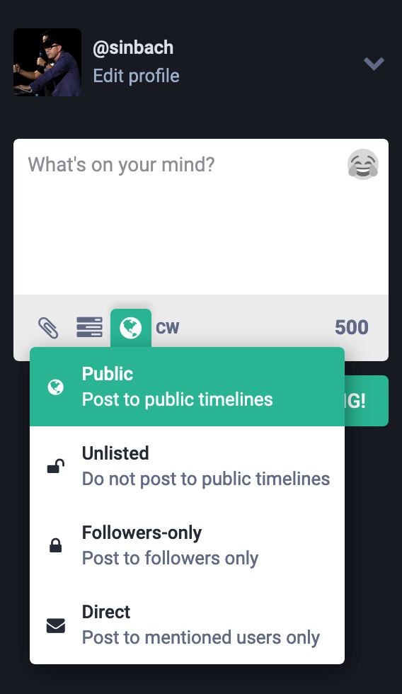
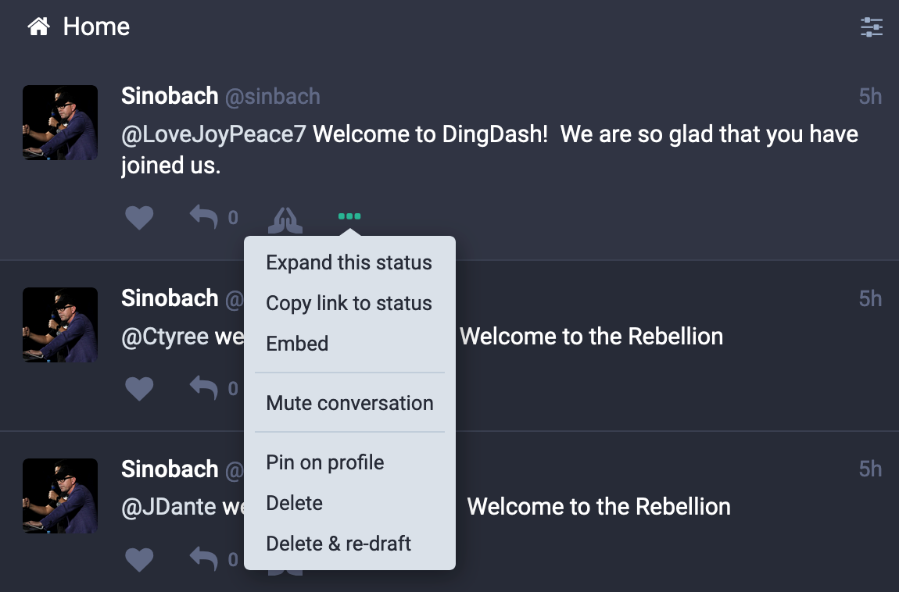
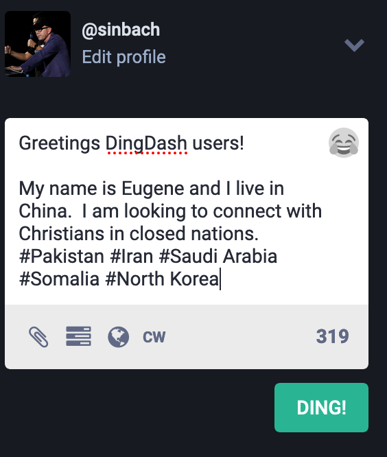
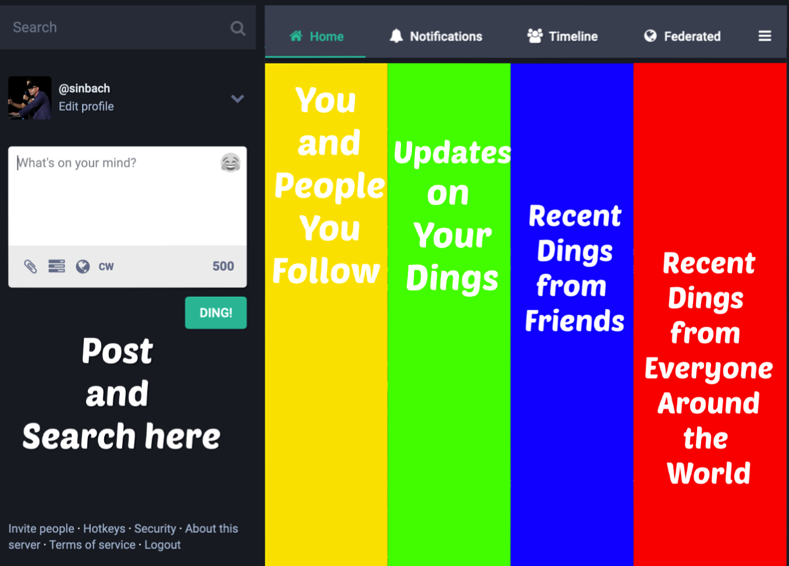

Welcome to the Help Documentation
Confused?
Don't worry! It wasn't fun going from MYSPACE to Facebook and from Facebook to Twitter and from Twitter to Instagram. BUT we are here to make it easy for you. Those other guys are creeps. DingDash is way cooler.
About This Tutorial #back to top
Welcome to the rebellious world of DingDash, a social media platform where you can breaks free from the chains of control and 24/7 monitoring. At DingDash you can be you, live your life, and never have to look over your shoulder. We’ll never collect or sell any of your information. We don’t police the content, there are no ads, and you can control what you want to see.
DingDash is a microblogging platform similar to others you may have seen, such as Facebook or Twitter, but instead of being centralised it is a federated network based on Mastodone which operates in a similar way to email.
This decentralisation allows us to connect to those that live in closed nations and it also helps keep your information safe. This means there’s no government access to your account, no no central control, no advertising, and no large corporations dictating what you can and cannot say.
Those other social media networks – yea they watch you get undressed, peek into your browsing files, and monitor you on the toilet. Not at DingDash. At DingDash, you are truly free! - So use the toilet again without being watched.
This tutorial will introduce you to the basic concepts and features of DingDash and will help you experience everything that social media promised you, but didn't deliver. This tutorial is not comprehensive and does not cover every single feature. It is a tutorial – not the Bible – that means you will learn some basic features, but to learn the rest, you will need to pray for it.
DingDash Introduction #back to top
DingDash started as a unique community primarily made up of persecuted Christians from around the world that do not want the government watching them, controlling their content, or filtering their messages. When you join DingDash, you will be able to connect with, pray for, and be inspired by persecuted Christians from around the world.
What does the name DingDash Mean?
DingDash is based on the vital messaging system made up of dings and dashes known as Morse Code. Morse Code proved to be detrimental to send messages between war ships in enemy waters during WWII. The logo for DingDash is JESUS spelled out in Morse Code.
Installation #back to top
There are two primary ways to use DingDash.
- Download the DingDash App
- Through your browser

Getting Around #back to top
DingDash looks and feels different than other social media platforms that you are used to. That is because those other platforms suck and DingDash doesn't.
Dings
Posts in DingDash are called “Dings.” You can post a ding by simply typing a message in the quote box and pushing the button labeled DING!
WHO WILL SEE YOUR DING?
All Dings will automatically posted to the public view timeline unless chosen otherwise. You can however choose a more secure setting if you do not wish others to see your post.
Security
If you would like to keep your Dings more private, there are several options for you to choose from before you publish your Ding. At the bottom of your test box you have a few small icons, one of which is a globe.
If you click on the globe, a box will drop down like the picture of the left with a few options.
The four options that you have for security are pretty self-explanatory. For the least secure and most open, click Public. For the most secure and least open option, click Direct. This option refers to direct mail and will only be sent as a private message to those mentioned.
Responding To Dings
This is where DingDash gets fun. You have a couple of options of that are unique to DingDash.
 How better to tell a user you like their Ding than with a heart?
How better to tell a user you like their Ding than with a heart?
 These prayers hands are powerful so please use them responsibly. With great power comes great responsibility. Clicking here will BOOST the Ding and give it more traction so that others are more likely to see it. The prayer hands are more than just an icon telling a fellow Dash'er that you are praying for their Ding, but it is a tangible way of doing something immediately – which is booting their post. Do you like a post – THEN BOOST IT. The more that a Ding is boosted, the more it is likely that others will see it.
These prayers hands are powerful so please use them responsibly. With great power comes great responsibility. Clicking here will BOOST the Ding and give it more traction so that others are more likely to see it. The prayer hands are more than just an icon telling a fellow Dash'er that you are praying for their Ding, but it is a tangible way of doing something immediately – which is booting their post. Do you like a post – THEN BOOST IT. The more that a Ding is boosted, the more it is likely that others will see it.
This little do-dad allows you to share Ding content to your own contacts outside DingDash. For example you may read an encouraging quote you’d like to pass on through another social media that is not as cool or as Christian as DingDash (but hey – to each his own). If you use other social media, I will not cast the first stone (but perhaps the second or third stone).
Other Options
At the bottom of every Ding, you will notice more options, indicated with three dots. If you click on those three dots, you will see an expanded status that gives you several options.
You can expand the Ding to look at anything that might be hidden. You can share it, mute it, delete it (on your own profile) or you can edit it.
You can also use this option on other profiles to BLOCK a user.
Posting Media
You can share videos and pictures by clicking the icon in the chat box that looks like a paperclip📎. You will be prompted to search for your file. After clicking on it, you will be given the option to post.
Unfortunately at the moment, only files of 35 MB are able to load. Long videos are best shared from other formats like YouTube and then the link from YouTube can be posted on DingDash.
Finding Friends
Hashtag Hashtag Hashtag
We cannot express this enough! Hashtag!
Hashtags are REALLY important when finding friends. In fact, they are the only part of the Dings that are searchable. So if you want to be found by people searching for sermons, it is best to include #sermons in your ding.
Here is an example of a Ding from my account looking for friends in closed nations.
Tab Description
Home
Home is where you go to see all of your Dings in chronological order as well as Dings of the people you’re following.
Notifications
This one – well – kind of does what it says. It's a place to see where you have been mentioned in other posts or actions have been taken in response to your Ding.
Local
This is where the magic happens. Local is the live feed of all the Dings of people in your network or even from people who have hashtag'ed a specific topic. This is the town square and has a bit of a Slack chatroom to it.
Federated
Feeling adventurous and wanting to meet new people? Time to get federated! Here you can find the public Dings of those around the world that have not locked their accounts. This column moves fast, and can often be pretty wild. You might enjoy setting that column to show only Dings with media from China, dangerous selfies, funny memes, or funky art.
Settings
One of the best settings on DingDash is that button that says “CW” where you write your Dings. Clicking that button adds a Content Warning to your Ding. Since this forum is primarily made up of Christians, if you post a disturbing Ding that could be offensive (eg. Violence, language, nudity, etc) you can just push this button and it will not automatically scroll across the feed of others that might want to avoid seeing that material.